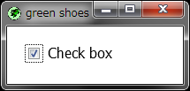

The Green Shoes Manual 0.221.0
Check
Check boxes are clickable square boxes than can be either checked or unchecked. A single checkbox usually asks a "yes" or "no" question. Sets of checkboxes are also seen in to-do lists. 
Here's a sample checklist.
Shoes.app do
stack do
flow do
check; para "Frances Johnson", width: 200
end
flow do
check; para "Ignatius J. Reilly", width: 200
end
flow do
check
para "Winston Niles Rumfoord", width: 200
end
end
end
You basically have two ways to use a check. You can attach a block to the check and it'll get called when the check gets clicked. And/or you can just use the checked? method to go back and see if a box has been checked or not.
Okay, let's add to the above example.
Shoes.app do
@list = ['Frances Johnson', 'Ignatius J. Reilly',
'Winston Niles Rumfoord']
stack do
@list.map! do |name|
flow { @c = check; para name, width: 200 }
[@c, name]
end
button "What's been checked?" do
selected =
@list.map{|c, n| n if c.checked?}.compact
alert("You selected: " + selected.join(', '))
end
end
end
So, when the button gets pressed, each of the checks gets asked for its status, using the checked? method.
Button methods are listed below, but also see the list of Common methods, which all elements respond to.
Returns whether the box is checked or not. So, true means "yes, the box is checked!"
Marks or unmarks the check box. Using checked = false, for instance, unchecks the box.
When the check is clicked, its click block is called. The block is handed self, which is the check object which was clicked.
Clicks are sent for both checking and unchecking the box.
Moves focus to the check. The check will be highlighted and, if the user hits Enter, the check will be toggled between its checked and unchecked states.
Note: Green Shoes doesn't support focus method.
Next: EditBox